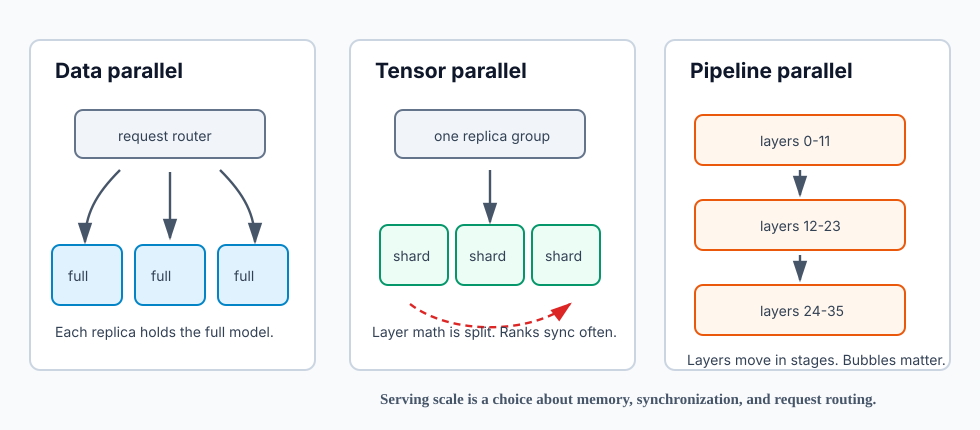
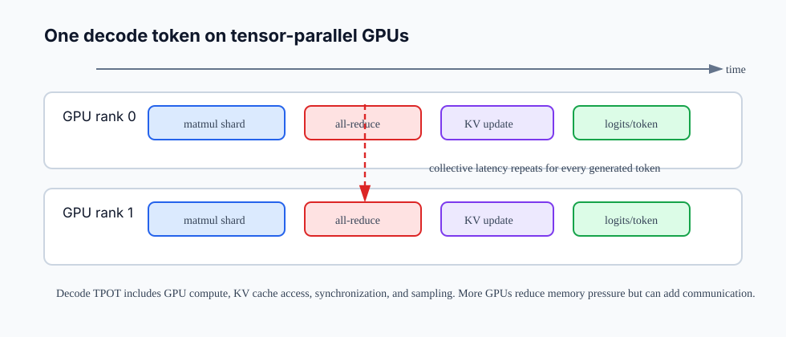

12장. Parallelism과 NCCL: 한 GPU를 넘을 때 생기는 문제¶
11장까지는 runtime과 platform을 고르는 문제를 다뤘다. 이제 더 근본적인 제약이 나온다.
모델이 한 GPU에 들어가지 않거나, 한 GPU로는 필요한 throughput을 만들 수 없으면 무엇이 바뀌는가?
GPU를 여러 개 붙이면 capacity가 자동으로 늘어날 것처럼 보인다. 실제로는 model weight, KV cache, activation, scheduler, network topology, collective communication이 모두 같은 요청의 latency 안으로 들어온다. 단일 GPU에서는 "GPU가 빠른가"를 주로 물었다면, multi-GPU에서는 "GPU들이 서로 얼마나 자주, 얼마나 멀리, 얼마나 큰 데이터를 주고받는가"를 물어야 한다.
이 장의 독자 질문은 다음과 같다.
Tensor parallelism, pipeline parallelism, data parallelism은 각각 어떤 문제를 풀고, NCCL 통신은 decode latency에 어디서 들어오는가?
핵심은 하나다. Multi-GPU serving은 GPU 수를 늘리는 작업이 아니라, memory pressure와 communication cost를 교환하는 작업이다.
먼저 왜 한 GPU를 넘는지 구분한다¶
Multi-GPU가 필요한 이유는 크게 세 가지다.
| 이유 | 증상 | 먼저 의심할 제약 |
|---|---|---|
| 모델이 크다 | weight가 한 GPU VRAM에 들어가지 않는다 | model weight memory |
| context가 길다 | 모델은 올라가지만 동시 요청을 못 받는다 | KV cache memory |
| traffic이 많다 | latency SLO를 유지하면서 QPS를 못 받는다 | replica 수, scheduler, routing |
이 세 이유를 섞으면 설계가 흔들린다. 예를 들어 weight가 한 GPU에 들어가지 않는 문제는 tensor parallelism이나 pipeline parallelism으로 풀어야 한다. 반면 모델은 한 GPU에 들어가는데 traffic이 많은 문제는 data parallel replica를 늘리는 쪽이 더 단순할 수 있다. Context가 긴 문제는 GPU를 늘려도 KV cache 배치 방식, max model length, batch token limit을 같이 보지 않으면 해결되지 않는다.
따라서 multi-GPU 설계의 첫 문장은 다음처럼 써야 한다.
우리는 weight 때문에 GPU를 나누는가, KV cache 때문에 capacity를 늘리는가, 아니면 traffic 때문에 replica를 늘리는가?
세 가지 parallelism을 같은 말로 부르지 않는다¶
LLM serving에서 자주 만나는 parallelism은 data parallelism, tensor parallelism, pipeline parallelism이다.

Data parallelism은 replica를 늘린다¶
Data parallel serving은 같은 모델 replica를 여러 개 띄우고 request router가 요청을 나누는 방식이다. 각 replica는 전체 model weight와 자기 replica의 KV cache를 가진다.
장점은 단순하다. Replica 간에 매 token마다 동기화할 필요가 없다. 한 replica가 느리거나 죽어도 routing과 retry로 격리하기 쉽다. 단일 GPU에서 모델이 잘 올라가고 traffic만 문제라면 가장 먼저 생각할 수 있는 방식이다.
하지만 data parallelism은 model memory 문제를 풀지 못한다. 70B 모델이 한 GPU에 안 들어간다면 replica를 늘릴 수 없다. 또 long context 요청이 특정 replica에 몰리면 그 replica의 KV cache만 압박을 받는다. Router가 token shape을 모르고 단순 round-robin만 하면 GPU 사용률은 높아 보이는데 p95 latency가 무너질 수 있다.
Tensor parallelism은 layer 내부 계산을 나눈다¶
Tensor parallelism은 하나의 layer 안에서 큰 matrix multiplication을 여러 GPU rank로 나눈다. 각 GPU는 weight shard를 들고 자기 shard의 계산을 수행한다. 그 다음 partial result를 합치기 위해 collective communication이 필요하다.
이 방식은 model weight가 한 GPU에 들어가지 않을 때 강력하다. 4 GPU tensor parallel group을 쓰면 각 GPU가 전체 weight의 일부만 들 수 있다. 또한 attention head나 MLP projection처럼 큰 tensor 연산을 병렬화할 수 있다.
대가도 분명하다. 매 layer 또는 여러 layer 지점에서 rank 간 동기화가 필요하다. Prefill처럼 큰 matrix 연산이 많은 구간에서는 계산 병렬화 이득이 클 수 있지만, decode처럼 token 하나씩 반복되는 구간에서는 작은 collective latency가 TPOT에 계속 누적된다.
Pipeline parallelism은 layer 구간을 나눈다¶
Pipeline parallelism은 layer 0-11은 GPU 0, layer 12-23은 GPU 1처럼 model depth를 stage로 나눈다. 각 request의 activation은 stage를 따라 이동한다.
이 방식은 GPU 사이 통신 빈도를 줄일 수 있다. Tensor parallelism처럼 layer 내부마다 자주 합치는 대신, stage 경계에서 activation을 넘긴다. vLLM 문서는 모델이 한 node에 들어가지만 GPU 수가 모델 크기를 고르게 나누지 못하거나 NVLink가 없는 GPU 환경에서는 pipeline parallelism이 더 나을 수 있다고 설명한다.
하지만 pipeline에는 bubble이 있다. Stage가 모두 항상 바쁘려면 충분한 microbatch 또는 request concurrency가 필요하다. Decode serving에서는 token 단위 반복과 scheduler 정책 때문에 pipeline 효율이 기대보다 낮아질 수 있다.
NCCL은 GPU들이 함께 움직이게 하는 통신 계층이다¶
NCCL은 NVIDIA GPU 사이의 collective communication과 point-to-point communication을 제공하는 library다. AI 인프라 엔지니어가 자주 만나는 collective는 다음과 같다.
| Collective | 직관 | Serving에서 보이는 위치 |
|---|---|---|
| all-reduce | 각 rank의 partial result를 합쳐 모두에게 돌려준다 | tensor parallel layer output 합치기 |
| all-gather | rank별 shard를 모아 모두가 전체를 보게 한다 | sharded tensor 재구성 |
| reduce-scatter | 합친 결과를 다시 rank별 shard로 나눈다 | distributed tensor 연산 최적화 |
| broadcast | 한 rank의 값을 다른 rank로 보낸다 | parameter, metadata, sampling result 공유 |
| all-to-all | rank마다 서로 다른 데이터를 교환한다 | expert parallel, MoE routing |
중요한 점은 NCCL이 "느린 것"이 아니라는 사실이다. NCCL은 GPU 통신을 빠르게 하기 위한 계층이다. 문제는 serving workload가 통신을 반복적으로 요구한다는 데 있다. Decode는 한 token을 만들 때마다 비슷한 경로를 다시 돈다. 따라서 collective 하나가 조금만 느려도 전체 TPOT에 반복해서 들어간다.

Decode에서 통신 비용은 왜 더 아프게 느껴지는가¶
Prefill과 decode는 multi-GPU에서 다르게 보인다.
Prefill은 입력 prompt 전체를 처리한다. Token 수가 많고 matrix 연산이 크기 때문에 GPU compute가 상대적으로 두껍다. Tensor parallelism으로 큰 연산을 나누면 communication이 있어도 계산 이득이 커질 수 있다.
Decode는 output token을 하나씩 만든다. 각 step은 작고 반복적이다. Compute가 짧아질수록 collective latency, kernel launch overhead, scheduler overhead가 더 잘 보인다. 즉 GPU를 늘렸는데 TPOT이 예상만큼 줄지 않거나 오히려 늘 수 있다.
간단히 쓰면 다음과 같다.
이 식은 정확한 성능 모델이 아니라 사고 도구다. 단일 GPU에서는 comm_collective가 거의 보이지 않는다. Tensor parallel group을 만들면 이 항이 생긴다. GPU 수를 늘릴 때마다 memory pressure는 줄어들 수 있지만 communication path가 길어질 수 있다.
KV cache는 rank마다 어떻게 보아야 하는가¶
KV cache는 multi-GPU에서 더 조심해야 한다. 5장에서 본 것처럼 KV cache는 layer, token, KV head, head dimension, dtype에 비례한다. Tensor parallelism이나 attention head sharding을 쓰면 각 rank가 전체 KV cache의 일부를 갖는 구조가 될 수 있다. 하지만 "GPU가 4개니까 KV cache capacity가 정확히 4배"라고 말하면 안 된다.
실제 capacity는 다음에 영향을 받는다.
- model weight shard가 각 GPU에서 얼마나 VRAM을 차지하는가
- runtime이 KV cache block을 어떤 단위로 예약하고 회수하는가
max_model_len, batch token limit, active sequence 수가 어떻게 설정되어 있는가- tensor parallel group과 data parallel replica가 어떤 조합인지
- prefix cache, speculative decoding, LoRA, guided decoding 같은 기능이 추가 memory를 요구하는가
vLLM은 실행 로그에서 GPU KV cache size와 최대 동시성 추정치를 보여 준다. 이 값은 "이 parallelism 설정에서 실제로 몇 token을 담을 수 있는가"를 읽는 첫 단서다. Multi-GPU에서는 총 VRAM만 보지 말고 rank별 free memory와 runtime이 보고하는 KV cache capacity를 함께 봐야 한다.
Topology는 성능 특성이다¶
같은 4 GPU라도 topology가 다르면 tensor parallelism의 성능이 달라진다. GPU들이 NVLink로 직접 연결된 node와 PCIe switch를 거치는 node는 collective latency와 bandwidth가 다르다. Multi-node로 넘어가면 GPU 간 통신은 NIC, InfiniBand 또는 RoCE, GPUDirect RDMA 설정까지 영향을 받는다.
실무에서 가장 먼저 볼 수 있는 명령은 다음이다.
nvidia-smi topo -m
출력에는 GPU 사이 연결 관계가 matrix로 나온다. NVIDIA 문서의 legend에 따르면 NV#는 여러 NVLink로 묶인 연결을, PIX는 하나의 PCIe bridge를, PXB는 여러 PCIe bridge를, PHB는 PCIe host bridge를, NODE와 SYS는 NUMA 또는 CPU interconnect를 지나는 더 먼 경로를 뜻한다.
읽는 기준은 단순하다.
| 표시 | 대략적 의미 | Serving 해석 |
|---|---|---|
NV# |
NVLink 연결 | tensor parallel group 후보 |
PIX / PXB |
PCIe switch 경유 | 가능하지만 communication cost 주의 |
PHB |
CPU host bridge 경유 | latency-sensitive TP에는 불리할 수 있음 |
NODE / SYS |
NUMA 또는 CPU interconnect 경유 | 같은 TP group으로 묶기 전에 재검토 |
Topology는 "하드웨어 정보"가 아니라 runtime 선택 기준이다. Tensor parallelism은 rank 간 자주 동기화하므로 가까운 GPU를 선호한다. Pipeline parallelism은 stage 경계 통신이 상대적으로 드물 수 있으므로 NVLink가 약한 환경에서 더 나은 선택지가 될 수 있다. Data parallelism은 replica 간 token-level 동기화가 적어 topology에 덜 민감하지만, router와 model loading, KV cache locality가 중요해진다.
Single-node와 multi-node는 다른 문제다¶
Single-node multi-GPU에서는 주로 GPU-GPU path를 본다. NVLink, PCIe switch, NUMA affinity가 핵심이다. Multi-node로 넘어가면 NIC와 network fabric이 serving path에 들어온다.
Multi-node serving에서 확인해야 할 질문은 다음과 같다.
- 모든 node의 driver, CUDA, NCCL, runtime version이 맞는가?
- Container image와 model path가 모든 node에서 동일한가?
- NCCL이 올바른 network interface를 선택하는가?
- GPU Direct RDMA가 필요한 workload인가, 그리고 실제로 켜져 있는가?
- Ray나 MPI 같은 distributed executor가 장애, restart, placement를 어떻게 처리하는가?
- Control traffic과 data traffic이 같은 network를 공유하는가?
vLLM의 multi-node 문서는 동일한 실행 환경과 container image 사용을 강조하고, Ray cluster 위에서 multi-node deployment를 구성하는 흐름을 제시한다. 여기서 중요한 것은 Ray 자체보다 "distributed serving은 runtime 실행 환경을 모든 node에서 재현해야 한다"는 점이다.
Parallelism 선택은 workload shape에서 시작한다¶
다음 표는 첫 선택을 돕기 위한 rough guide다.
| 상황 | 우선 고려 | 이유 |
|---|---|---|
| 모델이 한 GPU에 잘 들어가고 QPS만 부족하다 | data parallel replica | 단순하고 token-level sync가 적다 |
| 모델 weight가 한 GPU에 안 들어간다 | tensor parallelism | layer 내부 weight shard로 memory 문제를 푼다 |
| GPU 사이 NVLink가 약하거나 uneven split이 필요하다 | pipeline parallelism | layer 단위 분할로 통신 패턴을 바꾼다 |
| 모델이 한 node에도 안 들어간다 | tensor + pipeline parallelism | node 내부 TP, node 간 PP 조합을 검토한다 |
| MoE 모델이다 | expert parallelism 포함 검토 | expert routing과 all-to-all 비용이 중요하다 |
| long context 요청이 많다 | KV cache capacity 중심 검토 | weight보다 active token memory가 먼저 터질 수 있다 |
이 표는 정답표가 아니다. 실제 결정은 benchmark로 닫아야 한다. 동일 모델, 동일 input/output token shape, 동일 concurrency에서 single GPU, DP, TP, PP 조합을 비교해야 한다.
실습: nvidia-smi topo -m으로 TP group 후보 고르기¶
실습 목표는 특정 runtime을 tuning하기 전에 하드웨어 제약을 읽는 것이다.
- GPU topology를 확인한다.
nvidia-smi topo -m
-
GPU 사이 matrix에서
NV#,PIX,PXB,PHB,NODE,SYS를 표시한다. -
Tensor parallel group 후보를 세운다.
| 후보 group | 연결 상태 | 판단 |
|---|---|---|
| GPU 0,1 | NV# |
우선 후보 |
| GPU 0,2 | PIX |
benchmark 필요 |
| GPU 0,3 | PHB |
latency-sensitive TP에서는 피하고 싶음 |
- 같은 모델을 단일 GPU와 TP=2 또는 TP=4로 띄워 다음을 비교한다.
| 측정 항목 | 단일 GPU | TP=2 | TP=4 |
|---|---|---|---|
| model load 성공 여부 | |||
| GPU KV cache size | |||
| TTFT | |||
| TPOT | |||
| throughput tokens/sec | |||
| p95 latency | |||
| GPU memory headroom | |||
| NCCL warning/error |
- 결론을 한 문장으로 쓴다.
이 node에서는 TP=4가 model load에는 필요하지만, decode TPOT은 TP=2보다 나쁘다. 이유는 GPU 2-3 경로가 PCIe/PHB를 지나고 collective latency가 늘기 때문이다.
이런 문장이 나와야 multi-GPU 실험이 지식으로 남는다.
실패 패턴¶
GPU 수만 보고 성능을 예상한다¶
4 GPU가 1 GPU보다 항상 4배 빠르지 않다. Model memory는 나뉘지만 collective communication이 생긴다. Decode workload에서는 이 비용이 반복된다.
Data parallelism과 tensor parallelism을 섞어 말한다¶
DP는 replica를 늘리는 것이고 TP는 하나의 replica 내부를 나누는 것이다. DP=4와 TP=4는 완전히 다른 memory, routing, failure domain을 만든다.
총 VRAM만 보고 long context capacity를 판단한다¶
KV cache capacity는 runtime block manager, rank별 memory, max sequence length, active token 수에 의해 결정된다. 총 VRAM이 충분해도 특정 rank에서 OOM이 날 수 있다.
NCCL error를 application error처럼 처리한다¶
NCCL hang, timeout, interface mismatch, topology detection 문제는 application retry만으로 해결되지 않는다. Driver, fabric, container, environment variable, process placement를 같이 봐야 한다.
Multi-node를 single-node의 연장으로 본다¶
Multi-node는 network interface, RDMA, security, clock, image consistency, placement, failure handling이 들어온다. 같은 --tensor-parallel-size라도 운영 복잡도는 다르다.
정리¶
- Multi-GPU serving은 memory pressure와 communication cost의 trade-off다.
- Data parallelism은 full model replica를 늘려 traffic을 나누지만 model memory 문제를 풀지 못한다.
- Tensor parallelism은 layer 내부 계산과 weight를 나누지만 collective communication이 TPOT에 반복해서 들어간다.
- Pipeline parallelism은 layer 구간을 stage로 나누며, topology가 약하거나 uneven split이 있을 때 선택지가 될 수 있다.
- NCCL은 all-reduce, all-gather, reduce-scatter, broadcast, all-to-all 같은 GPU collective communication을 제공한다.
nvidia-smi topo -m은 tensor parallel group 후보와 communication risk를 읽는 첫 도구다.- Multi-node로 넘어가면 GPU topology뿐 아니라 NIC, RDMA, 동일한 runtime/container 환경, distributed executor까지 함께 검증해야 한다.
Source anchors¶
- NVIDIA NCCL overview: https://docs.nvidia.com/deeplearning/nccl/user-guide/docs/overview.html
- NVIDIA NCCL collective operations: https://docs.nvidia.com/deeplearning/nccl/user-guide/docs/usage/collectives.html
- NVIDIA System Management Interface documentation: https://docs.nvidia.com/deploy/nvidia-smi/index.html
- vLLM Parallelism and Scaling: https://docs.vllm.ai/en/stable/serving/parallelism_scaling/